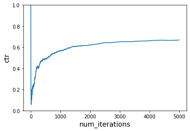
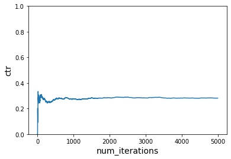
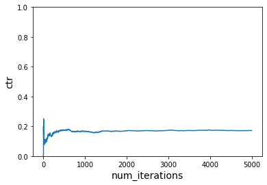
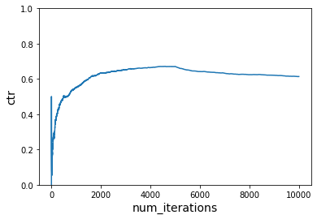
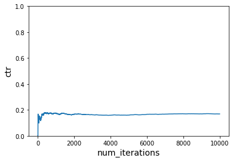

Vowpal Wabbit Contextual Bandit¶
Contextual bandit with changing context¶
Customizing the context and changing it midway to see how fast the agent can adapt to the new context and start recommending better products as per the context
!pip install -q vowpalwabbit
from vowpalwabbit import pyvw
import random
import matplotlib.pyplot as plt
import pandas as pd
from itertools import product
Setting the context¶
USER_LIKED_ARTICLE = -1.0
USER_DISLIKED_ARTICLE = 0.0
users = ['A','B','C']
items = ['Item1','Item2','Item3','Item4','Item5','Item6']
context1 = ['morning','evening']
context2 = ['summer','winter']
context = pd.DataFrame(list(product(users, context1, context2, items)), columns=['users', 'context1', 'context2', 'items'])
context['reward'] = 0
#user 1 likes Item 1 in morning, and Item 6 in summer
context.loc[(context.users=='A') & \
(context.context1=='morning') & \
(context['items']=='Item1'), \
'reward'] = 1
context.loc[(context.users=='A') & \
(context.context2=='summer') & \
(context['items']=='Item6'), \
'reward'] = 1
#user 2 likes Item 2 in winter, and Item 5 in summer morning
context.loc[(context.users=='B') & \
(context.context2=='winter') & \
(context['items']=='Item2'), \
'reward'] = 1
context.loc[(context.users=='B') & \
(context.context1=='morning') & \
(context.context2=='summer') & \
(context['items']=='Item5'), \
'reward'] = 1
#user 3 likes Item 2 in morning, Item 3 in evening, and item 4 in winter morning
context.loc[(context.users=='C') & \
(context.context1=='morning') & \
(context['items']=='Item2'), \
'reward'] = 1
context.loc[(context.users=='C') & \
(context.context1=='evening') & \
(context['items']=='Item3'), \
'reward'] = 1
context.loc[(context.users=='C') & \
(context.context1=='morning') & \
(context.context2=='winter') & \
(context['items']=='Item4'), \
'reward'] = 1
context['cost'] = context['reward']*-1
contextdf = context.copy()
contextdf.cost.value_counts()
0 60
-1 12
Name: cost, dtype: int64
Cost function util¶
def get_cost(context,action):
return contextdf.loc[(contextdf['users']==context['user']) & \
(contextdf.context1==context['context1']) & \
(contextdf.context2==context['context2']) & \
(contextdf['items']==action), \
'cost'].values[0]
get_cost({'user':'A','context1':'morning','context2':'summer'},'Item2')
0
Vowpalwabbit format util¶
# This function modifies (context, action, cost, probability) to VW friendly format
def to_vw_example_format(context, actions, cb_label = None):
if cb_label is not None:
chosen_action, cost, prob = cb_label
example_string = ""
example_string += "shared |User users={} context1={} context2={}\n".format(context["user"], context["context1"], context["context2"])
for action in actions:
if cb_label is not None and action == chosen_action:
example_string += "0:{}:{} ".format(cost, prob)
example_string += "|Action items={} \n".format(action)
#Strip the last newline
return example_string[:-1]
context = {"user":"A","context1":"morning","context2":"summer"}
print(to_vw_example_format(context,items))
shared |User users=A context1=morning context2=summer
|Action items=Item1
|Action items=Item2
|Action items=Item3
|Action items=Item4
|Action items=Item5
|Action items=Item6
def sample_custom_pmf(pmf):
total = sum(pmf)
scale = 1 / total
pmf = [x * scale for x in pmf]
draw = random.random()
sum_prob = 0.0
for index, prob in enumerate(pmf):
sum_prob += prob
if(sum_prob > draw):
return index, prob
def get_action(vw, context, actions):
vw_text_example = to_vw_example_format(context,actions)
pmf = vw.predict(vw_text_example)
chosen_action_index, prob = sample_custom_pmf(pmf)
return actions[chosen_action_index], prob
def choose_user(users):
return random.choice(users)
def choose_context1(context1):
return random.choice(context1)
def choose_context2(context2):
return random.choice(context2)
def run_simulation(vw, num_iterations, users, contexts1, contexts2, actions, cost_function, do_learn = True):
cost_sum = 0.
ctr = []
for i in range(1, num_iterations+1):
user = choose_user(users)
context1 = choose_context1(contexts1)
context2 = choose_context2(contexts2)
context = {'user': user, 'context1': context1, 'context2': context2}
# print(context)
action, prob = get_action(vw, context, actions)
# print(action, prob)
cost = cost_function(context, action)
# print(cost)
cost_sum += cost
if do_learn:
# 5. Inform VW of what happened so we can learn from it
vw_format = vw.parse(to_vw_example_format(context, actions, (action, cost, prob)),pyvw.vw.lContextualBandit)
# 6. Learn
vw.learn(vw_format)
# 7. Let VW know you're done with these objects
vw.finish_example(vw_format)
# We negate this so that on the plot instead of minimizing cost, we are maximizing reward
ctr.append(-1*cost_sum/i)
return ctr
def plot_ctr(num_iterations, ctr):
plt.plot(range(1,num_iterations+1), ctr)
plt.xlabel('num_iterations', fontsize=14)
plt.ylabel('ctr', fontsize=14)
plt.ylim([0,1])
# Instantiate learner in VW
vw = pyvw.vw("--cb_explore_adf -q UA --quiet --epsilon 0.2")
num_iterations = 5000
ctr = run_simulation(vw, num_iterations, users, context1, context2, items, get_cost)
plot_ctr(num_iterations, ctr)

# Instantiate learner in VW but without -q
vw = pyvw.vw("--cb_explore_adf --quiet --epsilon 0.2")
num_iterations = 5000
ctr = run_simulation(vw, num_iterations, users, context1, context2, items, get_cost)
plot_ctr(num_iterations, ctr)

# Instantiate learner in VW
vw = pyvw.vw("--cb_explore_adf -q UA --quiet --epsilon 0.2")
num_iterations = 5000
ctr = run_simulation(vw, num_iterations, users, context1, context2, items, get_cost, do_learn=False)
plot_ctr(num_iterations, ctr)

users = ['A','B','C']
items = ['Item1','Item2','Item3','Item4','Item5','Item6']
context1 = ['morning','evening']
context2 = ['summer','winter']
context = pd.DataFrame(list(product(users, context1, context2, items)), columns=['users', 'context1', 'context2', 'items'])
context['reward'] = 0
#user 1 likes Item 2 in morning, and Item 5 in summer
context.loc[(context.users=='A') & \
(context.context1=='morning') & \
(context['items']=='Item2'), \
'reward'] = 1
context.loc[(context.users=='A') & \
(context.context2=='summer') & \
(context['items']=='Item5'), \
'reward'] = 1
#user 2 likes Item 2 in summer, and Item 5 in morning
context.loc[(context.users=='B') & \
(context.context2=='summer') & \
(context['items']=='Item2'), \
'reward'] = 1
context.loc[(context.users=='B') & \
(context.context1=='morning') & \
(context['items']=='Item5'), \
'reward'] = 1
#user 3 likes Item 4 in morning, Item 3 in evening, and item 4 in winter evening
context.loc[(context.users=='C') & \
(context.context1=='morning') & \
(context['items']=='Item4'), \
'reward'] = 1
context.loc[(context.users=='C') & \
(context.context1=='evening') & \
(context['items']=='Item3'), \
'reward'] = 1
context.loc[(context.users=='C') & \
(context.context1=='evening') & \
(context.context2=='winter') & \
(context['items']=='Item4'), \
'reward'] = 1
context['cost'] = context['reward']*-1
contextdf_new = context.copy()
def get_cost_new1(context,action):
return contextdf_new.loc[(contextdf_new['users']==context['user']) & \
(contextdf_new.context1==context['context1']) & \
(contextdf_new.context2==context['context2']) & \
(contextdf_new['items']==action), \
'cost'].values[0]
def run_simulation_multiple_cost_functions(vw, num_iterations, users, contexts1, contexts2, actions, cost_functions, do_learn = True):
cost_sum = 0.
ctr = []
start_counter = 1
end_counter = start_counter + num_iterations
for cost_function in cost_functions:
for i in range(start_counter, end_counter):
user = choose_user(users)
context1 = choose_context1(contexts1)
context2 = choose_context2(contexts2)
context = {'user': user, 'context1': context1, 'context2': context2}
action, prob = get_action(vw, context, actions)
cost = cost_function(context, action)
cost_sum += cost
if do_learn:
vw_format = vw.parse(to_vw_example_format(context, actions, (action, cost, prob)),pyvw.vw.lContextualBandit)
vw.learn(vw_format)
ctr.append(-1*cost_sum/i)
start_counter = end_counter
end_counter = start_counter + num_iterations
return ctr
# use first reward function initially and then switch to second reward function
# Instantiate learner in VW
vw = pyvw.vw("--cb_explore_adf -q UA --quiet --epsilon 0.2")
num_iterations_per_cost_func = 5000
cost_functions = [get_cost, get_cost_new1]
total_iterations = num_iterations_per_cost_func * len(cost_functions)
ctr = run_simulation_multiple_cost_functions(vw, num_iterations_per_cost_func, users, context1, context2, items, cost_functions)
plot_ctr(total_iterations, ctr)

# Do not learn
# use first reward function initially and then switch to second reward function
# Instantiate learner in VW
vw = pyvw.vw("--cb_explore_adf -q UA --quiet --epsilon 0.2")
num_iterations_per_cost_func = 5000
cost_functions = [get_cost, get_cost_new1]
total_iterations = num_iterations_per_cost_func * len(cost_functions)
ctr = run_simulation_multiple_cost_functions(vw, num_iterations_per_cost_func, users, context1, context2, items, cost_functions, do_learn=False)
plot_ctr(total_iterations, ctr)

Contextual bandit with changing context part 2¶
Customizing the context and changing it midway to see how fast the agent can adapt to the new context and start recommending better products as per the context.
mapping_users = {
'Alex':'usera',
'Ben':'userb',
'Cindy': 'userc'
}
mapping_context1 = {
'Morning':'ctx11',
'Evening':'ctx12',
}
mapping_context2 = {
'Summer':'ctx21',
'Winter':'ctx22'
}
mapping_items = {
'Politics':'item1',
'Economics':'item2',
'Technology':'item3',
'Movies':'item4',
'Business':'item5',
'History':'item6'
}
# {v:k for k,v in mappings.items()}
from vowpalwabbit import pyvw
import random
import matplotlib.pyplot as plt
import pandas as pd
from itertools import product
users = list(mapping_users.values())
items = list(mapping_items.values())
context1 = list(mapping_context1.values())
context2 = list(mapping_context2.values())
context = pd.DataFrame(list(product(users, context1, context2, items)), columns=['users', 'context1', 'context2', 'items'])
context['reward'] = np.random.choice([0,1],len(context))
context['cost'] = context['reward']*-1
contextdf = context.copy()
contextdf
| users | context1 | context2 | items | reward | cost | |
|---|---|---|---|---|---|---|
| 0 | usera | ctx11 | ctx21 | item1 | 1 | -1 |
| 1 | usera | ctx11 | ctx21 | item2 | 1 | -1 |
| 2 | usera | ctx11 | ctx21 | item3 | 1 | -1 |
| 3 | usera | ctx11 | ctx21 | item4 | 0 | 0 |
| 4 | usera | ctx11 | ctx21 | item5 | 0 | 0 |
| ... | ... | ... | ... | ... | ... | ... |
| 67 | userc | ctx12 | ctx22 | item2 | 0 | 0 |
| 68 | userc | ctx12 | ctx22 | item3 | 0 | 0 |
| 69 | userc | ctx12 | ctx22 | item4 | 1 | -1 |
| 70 | userc | ctx12 | ctx22 | item5 | 1 | -1 |
| 71 | userc | ctx12 | ctx22 | item6 | 0 | 0 |
72 rows × 6 columns
import numpy as np
import scipy
import scipy.stats as stats
from vowpalwabbit import pyvw
import random
import pandas as pd
from itertools import product
# This function modifies (context, action, cost, probability) to VW friendly format
def to_vw_example_format(context, actions, cb_label=None):
if cb_label is not None:
chosen_action, cost, prob = cb_label
example_string = ""
example_string += "shared |User users={} context1={} context2={}\n".format(context["user"], context["context1"], context["context2"])
for action in actions:
if cb_label is not None and action == chosen_action:
example_string += "0:{}:{} ".format(cost, prob)
example_string += "|Action items={} \n".format(action)
#Strip the last newline
return example_string[:-1]
def sample_custom_pmf(pmf):
total = sum(pmf)
scale = 1 / total
pmf = [x * scale for x in pmf]
draw = random.random()
sum_prob = 0.0
for index, prob in enumerate(pmf):
sum_prob += prob
if(sum_prob > draw):
return index, prob
def get_action(vw, context, actions):
vw_text_example = to_vw_example_format(context, actions)
pmf = vw.predict(vw_text_example)
chosen_action_index, prob = sample_custom_pmf(pmf)
return actions[chosen_action_index], prob
def choose_user(users):
return random.choice(users)
def choose_context1(context1):
return random.choice(context1)
def choose_context2(context2):
return random.choice(context2)
class VWCSimulation():
def __init__(self, vw, ictxt, n=100000):
self.vw = vw
self.users = ictxt['users'].unique().tolist()
self.contexts1 = ictxt['context1'].unique().tolist()
self.contexts2 = ictxt['context2'].unique().tolist()
self.actions = ictxt['items'].unique().tolist()
self.contextdf = ictxt.copy()
self.contextdf['cost'] = self.contextdf['reward']*-1
def get_cost(self, context, action):
return self.contextdf.loc[(self.contextdf['users']==context['user']) & \
(self.contextdf.context1==context['context1']) & \
(self.contextdf.context2==context['context2']) & \
(self.contextdf['items']==action), \
'cost'].values[0]
def update_context(self, new_ctxt):
self.contextdf = new_ctxt.copy()
self.contextdf['cost'] = self.contextdf['reward']*-1
def step(self):
user = choose_user(self.users)
context1 = choose_context1(self.contexts1)
context2 = choose_context2(self.contexts2)
context = {'user': user, 'context1': context1, 'context2': context2}
action, prob = get_action(self.vw, context, self.actions)
cost = self.get_cost(context, action)
vw_format = self.vw.parse(to_vw_example_format(context, self.actions, (action, cost, prob)), pyvw.vw.lContextualBandit)
self.vw.learn(vw_format)
self.vw.finish_example(vw_format)
return (context['user'], context['context1'], context['context2'], action, cost, prob)
context = pd.DataFrame(list(product(users, context1, context2, items)), columns=['users', 'context1', 'context2', 'items'])
context['reward'] = np.random.choice([0,1],len(context),p=[0.8,0.2])
contextdf = context.copy()
contextdf.reward.value_counts()
0 61
1 11
Name: reward, dtype: int64
vw = pyvw.vw("--cb_explore_adf -q UA --quiet --epsilon 0.2")
vws = VWCSimulation(vw, contextdf)
vws.step()
('usera', 'ctx11', 'ctx22', 'item4', 0, 0.16666666666666666)
_temp = []
for i in range(5000):
_temp.append(vws.step())
x = pd.DataFrame.from_records(_temp, columns=['user','context1','context2','item','cost','prob'])
xx = x.copy()
xx['ccost'] = xx['cost'].cumsum()
xx = xx.fillna(0)
xx = xx.rename_axis('iter').reset_index()
xx['ctr'] = -1*xx['ccost']/xx['iter']
xx.sample(10)
| iter | user | context1 | context2 | item | cost | prob | ccost | ctr | |
|---|---|---|---|---|---|---|---|---|---|
| 3199 | 3199 | usera | ctx11 | ctx22 | item5 | -1 | 0.833333 | -1781 | 0.556736 |
| 700 | 700 | userb | ctx11 | ctx22 | item4 | -1 | 0.833333 | -343 | 0.490000 |
| 3660 | 3660 | usera | ctx12 | ctx22 | item5 | 0 | 0.833333 | -2035 | 0.556011 |
| 4123 | 4123 | userc | ctx12 | ctx22 | item5 | -1 | 0.833333 | -2302 | 0.558331 |
| 4448 | 4448 | userb | ctx11 | ctx22 | item4 | -1 | 0.833333 | -2480 | 0.557554 |
| 485 | 485 | usera | ctx11 | ctx21 | item2 | -1 | 0.833333 | -219 | 0.451546 |
| 3280 | 3280 | userb | ctx11 | ctx21 | item1 | 0 | 0.033333 | -1822 | 0.555488 |
| 1679 | 1679 | userb | ctx12 | ctx21 | item6 | -1 | 0.833333 | -901 | 0.536629 |
| 3489 | 3489 | userc | ctx11 | ctx21 | item3 | -1 | 0.833333 | -1932 | 0.553740 |
| 103 | 103 | usera | ctx11 | ctx22 | item2 | 0 | 0.833333 | -24 | 0.233010 |
xx['ccost'].plot()
<AxesSubplot:>
xx['ctr'].plot()
<AxesSubplot:>
tempdf1 = xx.copy()
context = pd.DataFrame(list(product(users, context1, context2, items)), columns=['users', 'context1', 'context2', 'items'])
context['reward'] = 0
X = context.copy()
X.loc[(X['users']=='usera')&(X['items']=='item1'),'reward']=1
X.loc[(X['users']=='userb')&(X['items']=='item2'),'reward']=1
X.loc[(X['users']=='userc')&(X['items']=='item3'),'reward']=1
X.reward.value_counts()
0 60
1 12
Name: reward, dtype: int64
vws.update_context(X)
_temp = []
for i in range(5000):
_temp.append(vws.step())
x = pd.DataFrame.from_records(_temp, columns=['user','context1','context2','item','cost','prob'])
xx = x.copy()
xx['ccost'] = xx['cost'].cumsum()
xx = xx.fillna(0)
xx = xx.rename_axis('iter').reset_index()
xx['ctr'] = -1*xx['ccost']/xx['iter']
xx.sample(10)
| iter | user | context1 | context2 | item | cost | prob | ccost | ctr | |
|---|---|---|---|---|---|---|---|---|---|
| 354 | 354 | userc | ctx12 | ctx21 | item2 | 0 | 0.833333 | -88 | 0.248588 |
| 3362 | 3362 | userb | ctx11 | ctx22 | item2 | -1 | 0.833333 | -2481 | 0.737954 |
| 485 | 485 | usera | ctx11 | ctx22 | item1 | -1 | 0.833333 | -171 | 0.352577 |
| 3383 | 3383 | userb | ctx11 | ctx22 | item3 | 0 | 0.033333 | -2499 | 0.738693 |
| 2803 | 2803 | userc | ctx12 | ctx21 | item3 | -1 | 0.833333 | -2002 | 0.714235 |
| 3410 | 3410 | userb | ctx12 | ctx21 | item3 | 0 | 0.033333 | -2521 | 0.739296 |
| 267 | 267 | usera | ctx12 | ctx21 | item4 | 0 | 0.033333 | -54 | 0.202247 |
| 3848 | 3848 | userb | ctx12 | ctx21 | item2 | -1 | 0.833333 | -2888 | 0.750520 |
| 54 | 54 | userb | ctx12 | ctx21 | item6 | 0 | 0.833333 | -13 | 0.240741 |
| 1447 | 1447 | userc | ctx11 | ctx21 | item5 | 0 | 0.033333 | -891 | 0.615757 |
tempdf2 = tempdf1.append(xx, ignore_index=True)
tempdf2.sample(10)
| iter | user | context1 | context2 | item | cost | prob | ccost | ctr | |
|---|---|---|---|---|---|---|---|---|---|
| 8837 | 3837 | usera | ctx12 | ctx22 | item1 | -1 | 0.833333 | -2879 | 0.750326 |
| 8210 | 3210 | userc | ctx11 | ctx21 | item2 | 0 | 0.033333 | -2348 | 0.731464 |
| 3280 | 3280 | userb | ctx11 | ctx21 | item1 | 0 | 0.033333 | -1822 | 0.555488 |
| 1029 | 1029 | userc | ctx12 | ctx21 | item1 | 0 | 0.033333 | -531 | 0.516035 |
| 4183 | 4183 | userc | ctx12 | ctx22 | item2 | 0 | 0.033333 | -2328 | 0.556538 |
| 2715 | 2715 | userc | ctx11 | ctx22 | item4 | -1 | 0.833333 | -1467 | 0.540331 |
| 6300 | 1300 | usera | ctx12 | ctx21 | item1 | -1 | 0.833333 | -776 | 0.596923 |
| 7111 | 2111 | usera | ctx12 | ctx21 | item1 | -1 | 0.833333 | -1427 | 0.675983 |
| 4008 | 4008 | usera | ctx11 | ctx22 | item5 | -1 | 0.833333 | -2239 | 0.558633 |
| 2236 | 2236 | userc | ctx12 | ctx21 | item2 | -1 | 0.833333 | -1203 | 0.538014 |
tempdf2['ccost'].plot()
<AxesSubplot:>
tempdf2['ctr'].plot()
<AxesSubplot:>
Contextual bandit dash app¶
Building a dash app of contextual bandit based recommender system
!pip install -q dash dash-html-components dash-core-components dash_bootstrap_components jupyter-dash
!pip install -q vowpalwabbit
!mkdir assets
!wget -O assets/image.jpg https://moodle.com/wp-content/uploads/2020/04/Moodle_General_news.png
import dash
import dash_core_components as dcc
import dash_html_components as html
import dash_bootstrap_components as dbc
from dash.dependencies import Input, Output, State
from jupyter_dash import JupyterDash
import plotly.graph_objs as go
import plotly.express as px
from vowpalwabbit import pyvw
import numpy as np
import pandas as pd
import itertools
import pathlib
from copy import deepcopy
from itertools import product
import scipy
import scipy.stats as stats
import random
# This function modifies (context, action, cost, probability) to VW friendly format
def to_vw_example_format(context, actions, cb_label=None):
if cb_label is not None:
chosen_action, cost, prob = cb_label
example_string = ""
example_string += "shared |User users={} context1={} context2={}\n".format(context["user"], context["context1"], context["context2"])
for action in actions:
if cb_label is not None and action == chosen_action:
example_string += "0:{}:{} ".format(cost, prob)
example_string += "|Action items={} \n".format(action)
#Strip the last newline
return example_string[:-1]
def sample_custom_pmf(pmf):
total = sum(pmf)
scale = 1 / total
pmf = [x * scale for x in pmf]
draw = random.random()
sum_prob = 0.0
for index, prob in enumerate(pmf):
sum_prob += prob
if(sum_prob > draw):
return index, prob
def get_action(vw, context, actions):
vw_text_example = to_vw_example_format(context, actions)
pmf = vw.predict(vw_text_example)
chosen_action_index, prob = sample_custom_pmf(pmf)
return actions[chosen_action_index], prob
def choose_user(users):
return random.choice(users)
def choose_context1(context1):
return random.choice(context1)
def choose_context2(context2):
return random.choice(context2)
class VWCSimulation():
def __init__(self, vw, ictxt):
self.vw = vw
self.users = ictxt['users'].unique().tolist()
self.contexts1 = ictxt['context1'].unique().tolist()
self.contexts2 = ictxt['context2'].unique().tolist()
self.actions = ictxt['items'].unique().tolist()
self.contextdf = ictxt.copy()
self.contextdf['cost'] = self.contextdf['reward']*-1
def get_cost(self, context, action):
return self.contextdf.loc[(self.contextdf['users']==context['user']) & \
(self.contextdf.context1==context['context1']) & \
(self.contextdf.context2==context['context2']) & \
(self.contextdf['items']==action), \
'cost'].values[0]
def update_context(self, new_ctxt):
self.contextdf = new_ctxt.copy()
self.contextdf['cost'] = self.contextdf['reward']*-1
def step(self):
user = choose_user(self.users)
context1 = choose_context1(self.contexts1)
context2 = choose_context2(self.contexts2)
context = {'user': user, 'context1': context1, 'context2': context2}
action, prob = get_action(self.vw, context, self.actions)
cost = self.get_cost(context, action)
vw_format = self.vw.parse(to_vw_example_format(context, self.actions, (action, cost, prob)), pyvw.vw.lContextualBandit)
self.vw.learn(vw_format)
self.vw.finish_example(vw_format)
return (context['user'], context['context1'], context['context2'], action, cost, prob)
app = JupyterDash(__name__, external_stylesheets = [dbc.themes.BOOTSTRAP])
def generate_input_cards(preference='Random'):
card_content = [
dbc.CardImg(src="assets/image.jpg", top=True),
dbc.CardBody([html.P(preference, className="card-title")])
]
card = dbc.Card(card_content, color="primary", outline=True)
return dbc.Col([card], width={"size": 2})
pref_grid = []
mapping_users = {
'Alex':'usera',
'Ben':'userb',
'Cindy': 'userc'
}
mapping_context1 = {
'Morning':'ctx11',
'Evening':'ctx12',
}
mapping_context2 = {
'Weekday':'ctx21',
'Weekend':'ctx22'
}
mapping_items = {
'Politics':'item1',
'Economics':'item2',
'Technology':'item3',
'Weather':'item4',
'Business':'item5',
'History':'item6'
}
mapping_users_reverse = {v:k for k,v in mapping_users.items()}
mapping_context1_reverse = {v:k for k,v in mapping_context1.items()}
mapping_context2_reverse = {v:k for k,v in mapping_context2.items()}
mapping_items_reverse = {v:k for k,v in mapping_items.items()}
users = list(mapping_users.values())
items = list(mapping_items.values())
context1 = list(mapping_context1.values())
context2 = list(mapping_context2.values())
context = pd.DataFrame(list(product(users, context1, context2, items)),
columns=['users', 'context1', 'context2', 'items'])
context['reward'] = np.random.choice([0,1],len(context),p=[0.8,0.2])
vw = pyvw.vw("--cb_explore_adf -q UA --quiet --epsilon 0.2")
vws = VWCSimulation(vw, context)
last_update = vws.step()
contextdf = context.copy()
countDF = contextdf.copy()
countDF['prob'] = 0
def generate_input_boxes():
dropdown_users = dcc.Dropdown(
id='ddown_users',
options=[{"label":k, "value":v} for k,v in mapping_users.items()],
clearable=False,
value="usera",
className="m-1",
)
dropdown_context1 = dcc.Dropdown(
id='ddown_ctx1',
options=[{"label":k, "value":v} for k,v in mapping_context1.items()],
clearable=False,
value="ctx11",
className="m-1",
)
dropdown_context2 = dcc.Dropdown(
id='ddown_ctx2',
options=[{"label":k, "value":v} for k,v in mapping_context2.items()],
clearable=False,
value="ctx21",
className="m-1",
)
dropdown_items = dcc.Dropdown(
id='ddown_items',
options=[{"label":k, "value":v} for k,v in mapping_items.items()],
clearable=False,
value="item1",
className="m-1",
)
return html.Div(
[
dropdown_users,
dropdown_context1,
dropdown_context2,
dropdown_items,
],
style={"display": "flex", "flex-direction": "column"},
)
def generate_context_boxes():
dropdown_outcontext1 = dcc.Dropdown(
id='ddown_outctx1',
options=[{"label":k, "value":v} for k,v in mapping_context1.items()],
clearable=False,
value="ctx11",
className="m-1",
)
dropdown_outcontext2 = dcc.Dropdown(
id='ddown_outctx2',
options=[{"label":k, "value":v} for k,v in mapping_context2.items()],
clearable=False,
value="ctx21",
className="m-1",
)
return html.Div(
[
dropdown_outcontext1,
dropdown_outcontext2
],
style={"display": "flex", "flex-direction": "column"},
)
app.layout = html.Div([
generate_input_boxes(),
dbc.Button("Register your Preference", color="primary", className="m-1",
id='pref-button', block=True),
html.Div(id='pref-grid'),
dbc.Button("Clear the context", color="secondary",
className="m-1", id='clr-button', block=True),
dbc.Button("Start rewarding Agent for these Preferences", color="success",
className="m-1", id='updt-button', block=True),
generate_context_boxes(),
dcc.Interval(
id='interval-component',
interval=100, # in milliseconds
n_intervals=0),
html.Div(id='placeholder'),
html.Div(id='placeholder2'),
])
@app.callback(
Output("pref-grid", "children"),
Input("pref-button", "n_clicks"),
Input("clr-button", "n_clicks"),
State('ddown_users', 'value'),
State('ddown_items', 'value'),
State('ddown_ctx1', 'value'),
State('ddown_ctx2', 'value'),
)
def update_pref_grid(nclick_pref, nclick_clr, pref_user, pref_item, pref_ctx1, pref_ctx2):
global pref_grid
changed_id = [p['prop_id'] for p in dash.callback_context.triggered][0]
if "pref-button" in changed_id:
global contextdf
card_text = '{} prefers {} related news in {} {}s'.format(mapping_users_reverse[pref_user],
mapping_items_reverse[pref_item],
mapping_context2_reverse[pref_ctx2],
mapping_context1_reverse[pref_ctx1])
contextdf.loc[(contextdf.users==pref_user) & \
(contextdf.context1==pref_ctx1) & \
(contextdf.context2==pref_ctx2), \
'reward'] = 0
contextdf.loc[(contextdf.users==pref_user) & \
(contextdf.context1==pref_ctx1) & \
(contextdf.context2==pref_ctx2) & \
(contextdf['items']==pref_item), \
'reward'] = 1
pref_grid.append(generate_input_cards(card_text))
return dbc.Row(children=pref_grid,
style={'max-width': '100%',
'display': 'flex',
'align-items': 'center',
'padding': '2rem 5rem',
'overflow': 'auto',
'height': 'fit-content',
'flex-direction': 'row',
})
elif "clr-button" in changed_id:
pref_grid = []
return dbc.Row(children=pref_grid)
@app.callback(
Output("placeholder2", "children"),
Input("updt-button", "n_clicks")
)
def update_context(nclick):
if nclick:
global vws
global contextdf
vws.update_context(contextdf)
return ''
@app.callback(
Output("placeholder", "children"),
Input('interval-component', 'n_intervals'),
Input('ddown_outctx1', 'value'),
Input('ddown_outctx2', 'value'),
)
def update_metrics(n, octx1, octx2):
global countDF
countDF = countDF.append(pd.Series(vws.step(),countDF.columns),ignore_index=True)
_x = countDF.copy()
_x = _x[(_x.context1==octx1) & (_x.context2==octx2)]
_x['reward']*=-1
pv = pd.pivot_table(_x, index=['users'], columns=["items"], values=['reward'], aggfunc=sum, fill_value=0)
pv.index = [mapping_users_reverse[x] for x in pv.index]
pv.columns = pv.columns.droplevel(0)
pv = pv.rename_axis('User').reset_index().rename_axis(None, axis=1).set_index('User').T.reset_index()
pv['index'] = pv['index'].map(mapping_items_reverse)
pv = pv.rename(columns={"index": "Preferences"})
out = html.Div([
dbc.Table.from_dataframe(pv, striped=True, bordered=True, hover=True, responsive=True)
])
return out
app.run_server(mode='inline', port=8081)
# !kill -9 $(lsof -t -i:8081) # command to kill the dash once done